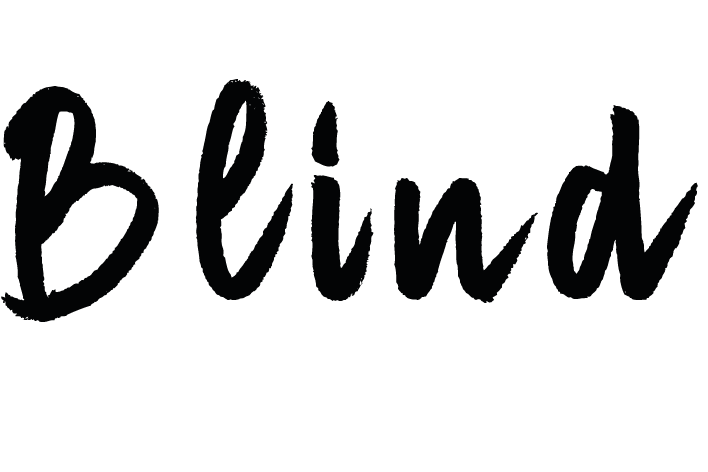

+
Piepende remmen, bus 21 komt tot stilstand. De stem van de buschauffeur, naar mij gericht, zakelijk, niet vriendelijk, niet onvriendelijk: ‘Centraal Station, eindhalte’. Het sissende geluid van busdeuren die open gaan. Mensen drommen naar buiten. Voorzichtig vind ik mijn weg naar de[…]